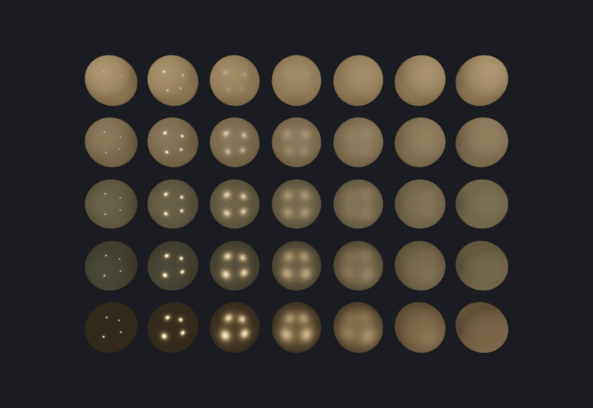
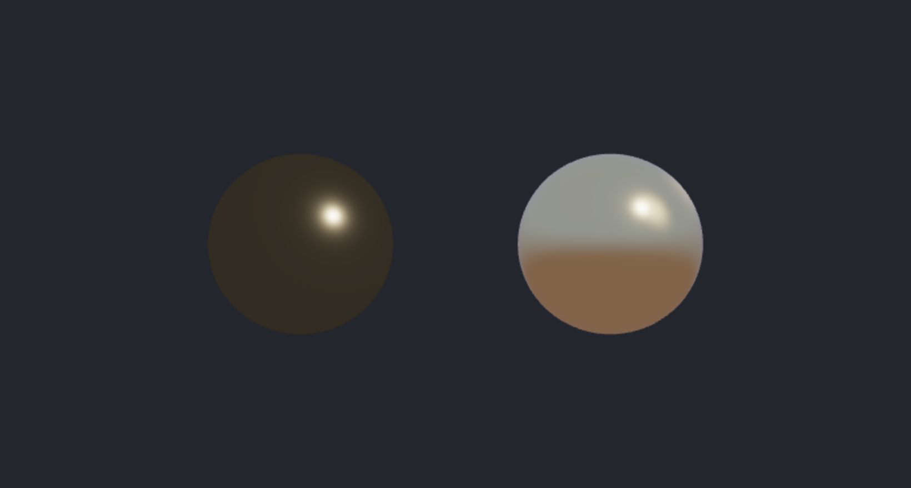

물리 기반 렌더링과 미래
이 장을 마치면
- 퐁 모델의 한계와 물리 기반 렌더링(PBR)이 등장한 이유를 설명할 수 있다.
- 금속성·거칠기 워크플로로 재질을 직관적으로 기술할 수 있다.
- 쿡 — 토런스 BRDF의 세 항(분포 \(D\)·기하 \(G\)·프레넬 \(F\))의 역할을 이해한다.
- 금속성과 거칠기를 바꾼 구 격자를 PBR 셰이더로 렌더할 수 있다.
- 환경을 조명으로 삼는 이미지 기반 조명(IBL)의 원리를 이해하고 간이 IBL을 구현할 수 있다.
- WebGPU가 WebGL과 무엇이 다른지, 지금까지의 지식이 어떻게 이어지는지 설명할 수 있다.
7장에서 우리는 퐁 반사 모델로 빛을 흉내 냈다. 확산과 정반사를 나누고, 정반사에 지수를 붙여 하이라이트를 만들었다. 그 결과는 그럴듯했지만, 어디까지나 눈속임이었다. 반짝임 지수 \(n\)은 물리적 의미가 없는 임의의 숫자였고, 같은 재질이라도 조명이 달라지면 손으로 값을 다시 맞춰야 했으며, 무엇보다 물체가 받은 빛보다 더 많은 빛을 되쏘아도 아무도 막지 않았다. 현대 실시간 그래픽스는 이 눈속임을 걷어내고 물리 기반 렌더링physically based rendering(PBR)으로 옮겨 갔다. 빛의 세기를 실제 물리량으로 다루고, 재질을 금속인가와 얼마나 거친가라는 두 직관적 숫자로 기술하며, 에너지 보존을 지킨다. 게임 엔진도, 영화 렌더러도, 그리고 우리가 12장에서 쓴 Three.js의 MeshStandardMaterial도 모두 이 원리 위에 서 있다.
이 장은 그 현대적 표준을 손으로 구현하며 시작한다. 먼저 PBR의 재질 모델과 반사율 방정식을 세우고, 금속성과 거칠기를 바꾼 구 격자를 직접 렌더해 두 파라미터가 표면을 어떻게 바꾸는지 눈으로 확인한다.
13.1 물리 기반 렌더링
퐁 모델의 한계
7장의 퐁 모델을 떠올려 보자. 정반사 항은 반사 벡터와 시선의 각도에 반짝임 지수shininess exponent \(n\)제곱을 씌운 것이었다. 이 \(n\)은 편리했지만 정직하지 않았다. 첫째, \(n=32\)나 \(n=128\) 같은 값은 어떤 물리량도 아니어서, 금속인지 플라스틱인지를 숫자로 옮기려면 감으로 맞춰야 했다. 둘째, 물체가 되쏘는 빛의 총량이 받은 빛을 넘지 않는다는 에너지 보존energy conservation을 전혀 보장하지 않아, 거친 표면일수록 오히려 더 밝아지는 비물리적 결과가 나오기도 했다. 셋째, 확산과 정반사의 비율이 고정되어 있어, 스치는 각도에서 모든 표면의 반사가 강해지는 프레넬 효과Fresnel effect를 담지 못했다.
물리 기반 렌더링은 이 셋을 정면으로 해결한다. 빛을 실제 복사휘도radiance로 다루고, 표면을 미세한 거울면들의 통계로 모델링하며(미세면 이론microfacet theory), 에너지 보존과 프레넬을 방정식에 내장한다. 그 대가로 재질은 단 몇 개의 물리적 파라미터로 기술된다.
금속성 — 거칠기 워크플로
가장 널리 쓰이는 PBR 재질 모델은 세 가지 입력만 받는다.
- 기본색base color(albedo): 표면 고유의 색. 비금속에서는 확산색, 금속에서는 반사색이 된다.
- 금속성metallic: 0이면 비금속(유전체), 1이면 금속. 그 사이는 보통 전이 영역이다.
- 거칠기roughness: 0이면 매끈한 거울, 1이면 완전히 흐릿한 표면.
금속과 비금속은 빛을 다루는 방식이 근본적으로 다르다. 비금속(유전체)은 빛의 일부를 표면에서 곧장 반사하고(정반사), 나머지는 속으로 들어갔다 흩어져 나온다(확산). 이때 표면 반사율은 방향과 무관하게 대략 4%로 거의 일정하다. 반면 금속은 확산이 없다. 들어온 빛을 모두 표면에서 반사하되, 그 반사에 금속 고유의 색을 입힌다. 그래서 금속의 기본색은 확산색이 아니라 반사색으로 쓰인다.
이 차이를 하나의 값 기본 반사율base reflectance \(F_0\)으로 합친다. 비금속은 \(F_0 \approx 0.04\)(회색), 금속은 \(F_0 = \) 기본색이다. 금속성으로 둘을 섞는다.
\[ F_0 = \mathrm{mix}(0.04,\ \text{albedo},\ \text{metallic}) \]금속성은 스위치에 가깝다. 0이면 "확산 있음 + 4% 반사", 1이면 "확산 없음 + 기본색으로 반사". 거칠기는 그 반사가 얼마나 또렷한지(거울)에서 흐릿한지(무광)를 조절한다. 이 두 숫자만으로 플라스틱·고무·금·구리·녹슨 철을 모두 표현할 수 있다.
반사율 방정식과 쿡 — 토런스 BRDF
한 점이 시선 방향으로 되쏘는 빛 \(L_o\)는, 그 점에 들어오는 모든 빛에 대해 양방향 반사율 분포 함수bidirectional reflectance distribution function(BRDF)를 곱해 더한 것이다. 점광원 여러 개라면 적분은 합이 된다.
\[ L_o = \sum_{i} \left( k_d\,\frac{\text{albedo}}{\pi} + \frac{D\,G\,F}{4\,(\mathbf{n}\cdot\mathbf{v})(\mathbf{n}\cdot\mathbf{l})} \right) L_i\,(\mathbf{n}\cdot\mathbf{l}) \]앞의 항은 램버트 확산Lambertian diffuse으로 7장에서 이미 만났다. 뒤의 분수가 쿡 — 토런스Cook–Torrance 정반사 BRDF이며, 세 함수 \(D\)·\(G\)·\(F\)의 곱으로 이루어진다. \(\mathbf{n}\)은 법선, \(\mathbf{v}\)는 시선, \(\mathbf{l}\)은 광원 방향, \(\mathbf{h}\)는 둘의 중간 벡터(half vector)다.
(D) — 법선 분포 함수
미세면 중 얼마나 많은 것이 하필 half 벡터 \(\mathbf{h}\)를 향하는지를 나타낸다. 이것이 하이라이트의 모양과 크기를 결정한다. 현대 표준은 GGXGGX 분포다(\(\alpha=\text{roughness}^2\)).
\[ D = \frac{\alpha^2}{\pi\big((\mathbf{n}\cdot\mathbf{h})^2(\alpha^2-1)+1\big)^2} \](G) — 기하 감쇠 함수
미세면들이 서로를 가려(그림자·차폐) 빛을 잃는 정도다. 거칠수록 더 많이 잃는다. 스미스 — 슐릭 근사를 쓴다(\(k=(\text{roughness}+1)^2/8\)).
\[ G_1(\mathbf{x}) = \frac{\mathbf{n}\cdot\mathbf{x}}{(\mathbf{n}\cdot\mathbf{x})(1-k)+k},\qquad G = G_1(\mathbf{v})\,G_1(\mathbf{l}) \](F) — 프레넬
스치는 각도에서 반사가 강해지는 효과다. 슐릭 근사가 표준이다.
\[ F = F_0 + (1-F_0)\,(1-(\mathbf{h}\cdot\mathbf{v}))^5 \]마지막으로 에너지 보존이다. 반사(정반사)로 나간 빛은 확산으로 다시 나갈 수 없다. 그래서 확산 비율 \(k_d\)를 프레넬로 깎고, 금속이면 확산을 아예 0으로 만든다.
\[ k_d = (1 - F)\,(1 - \text{metallic}) \]미세면 정반사 BRDF는 "얼마나 많은 미세면이 정렬됐나(\(D\)) \(\times\) 서로 가리지 않고 살아남았나(\(G\)) \(\times\) 얼마나 반사했나(\(F\))"의 곱이다. 분모 \(4(\mathbf{n}\cdot\mathbf{v})(\mathbf{n}\cdot\mathbf{l})\)은 미세면 좌표에서 표면 좌표로 넘어올 때 붙는 정규화 항이다. 셋을 각각 다른 함수로 갈아 끼우며 렌더러의 품질을 올려 온 것이 지난 15년의 실시간 그래픽스다.
PBR 셰이더
세 함수를 GLSL로 그대로 옮기면 다음과 같다. 7장의 조명 셰이더와 뼈대는 같지만, 정반사 계산이 쿡 — 토런스로 바뀐 것이 핵심이다.
const float PI = 3.14159265359;
// D: GGX 법선 분포
float distributionGGX(vec3 N, vec3 H, float rough){
float a = rough*rough, a2 = a*a;
float NdotH = max(dot(N,H), 0.0);
float d = NdotH*NdotH*(a2-1.0)+1.0;
return a2 / (PI*d*d);
}
// G: 스미스-슐릭 기하 감쇠
float geometrySchlick(float NdotX, float rough){
float r = rough+1.0; float k = (r*r)/8.0;
return NdotX / (NdotX*(1.0-k)+k);
}
float geometrySmith(vec3 N, vec3 V, vec3 L, float rough){
return geometrySchlick(max(dot(N,V),0.0), rough)
* geometrySchlick(max(dot(N,L),0.0), rough);
}
// F: 슐릭 프레넬
vec3 fresnelSchlick(float cosT, vec3 F0){
return F0 + (1.0-F0)*pow(clamp(1.0-cosT, 0.0, 1.0), 5.0);
}이 함수들을 광원마다 합산하면 한 점의 최종 색이 나온다. 금속은 확산을 0으로 만들고, 결과에 톤 매핑과 감마 보정을 적용한다(1.2절의 선형 색공간 논의와 이어진다).
vec3 F0 = mix(vec3(0.04), albedo, metallic); // 비금속 4%, 금속은 기본색
vec3 Lo = vec3(0.0);
for(int i=0; i<NL; i++){
vec3 L = normalize(lightPos[i]-world);
vec3 H = normalize(V+L);
float dist = length(lightPos[i]-world);
vec3 radiance = lightColor[i] / (dist*dist); // 거리 제곱 감쇠
float D = distributionGGX(N, H, roughness);
float G = geometrySmith(N, V, L, roughness);
vec3 F = fresnelSchlick(max(dot(H,V),0.0), F0);
vec3 spec = (D*G*F) / (4.0*max(dot(N,V),0.0)*max(dot(N,L),0.0)+0.0001);
vec3 kd = (vec3(1.0)-F)*(1.0-metallic); // 에너지 보존 + 금속은 확산 0
Lo += (kd*albedo/PI + spec) * radiance * max(dot(N,L),0.0);
}
vec3 color = vec3(0.03)*albedo + Lo; // 아주 약한 앰비언트
color = color/(color+vec3(1.0)); // 톤 매핑(Reinhard)
color = pow(color, vec3(1.0/2.2)); // 감마 보정예제 — 금속성·거칠기 격자
PBR의 두 파라미터가 표면을 어떻게 바꾸는지는 격자로 늘어놓고 보면 한눈에 들어온다. 아래 예제는 같은 구를 \(5\times7\)로 그리되, 위에서 아래로 금속성을 0에서 1로, 왼쪽에서 오른쪽으로 거칠기를 0에서 1로 바꾼다. 광원 네 개를 모서리에 두어 하이라이트가 여러 개 맺히게 했다.
const { mat4 } = glMatrix;
const gl = glCanvas.getContext('webgl2', { antialias: true });
// 구 메시 (UV 스피어)
function makeSphere(seg){
const pos=[], nrm=[], idx=[];
for(let y=0; y<=seg; y++) for(let x=0; x<=seg; x++){
const u=x/seg, v=y/seg;
const px=Math.cos(u*2*Math.PI)*Math.sin(v*Math.PI);
const py=Math.cos(v*Math.PI);
const pz=Math.sin(u*2*Math.PI)*Math.sin(v*Math.PI);
pos.push(px,py,pz); nrm.push(px,py,pz);
}
for(let y=0; y<seg; y++) for(let x=0; x<seg; x++){
const a=y*(seg+1)+x, b=a+seg+1;
idx.push(a,b,a+1, a+1,b,b+1);
}
return {pos:new Float32Array(pos), nrm:new Float32Array(nrm), idx:new Uint16Array(idx)};
}
const vs = `#version 300 es
layout(location=0) in vec3 aPos;
layout(location=1) in vec3 aNormal;
uniform mat4 uModel, uView, uProj;
out vec3 vWorld; out vec3 vN;
void main(){
vec4 w = uModel*vec4(aPos,1.0);
vWorld = w.xyz; vN = mat3(uModel)*aNormal;
gl_Position = uProj*uView*w;
}`;
const fs = `#version 300 es
precision highp float;
out vec4 outColor;
in vec3 vWorld; in vec3 vN;
uniform vec3 uEye, uAlbedo;
uniform float uMetallic, uRoughness;
uniform vec3 uLightPos[4], uLightColor[4];
const float PI = 3.14159265359;
float distributionGGX(vec3 N, vec3 H, float r){
float a=r*r, a2=a*a, NdotH=max(dot(N,H),0.0);
float d=NdotH*NdotH*(a2-1.0)+1.0; return a2/(PI*d*d);
}
float geometrySchlick(float NdotX, float r){
float k=(r+1.0)*(r+1.0)/8.0; return NdotX/(NdotX*(1.0-k)+k);
}
float geometrySmith(vec3 N, vec3 V, vec3 L, float r){
return geometrySchlick(max(dot(N,V),0.0),r)*geometrySchlick(max(dot(N,L),0.0),r);
}
vec3 fresnelSchlick(float c, vec3 F0){ return F0+(1.0-F0)*pow(clamp(1.0-c,0.0,1.0),5.0); }
void main(){
vec3 N=normalize(vN), V=normalize(uEye-vWorld);
vec3 F0=mix(vec3(0.04), uAlbedo, uMetallic);
vec3 Lo=vec3(0.0);
for(int i=0;i<4;i++){
vec3 L=normalize(uLightPos[i]-vWorld), H=normalize(V+L);
float dist=length(uLightPos[i]-vWorld);
vec3 radiance=uLightColor[i]/(dist*dist);
float D=distributionGGX(N,H,uRoughness);
float G=geometrySmith(N,V,L,uRoughness);
vec3 F=fresnelSchlick(max(dot(H,V),0.0),F0);
vec3 spec=(D*G*F)/(4.0*max(dot(N,V),0.0)*max(dot(N,L),0.0)+0.0001);
vec3 kd=(vec3(1.0)-F)*(1.0-uMetallic);
Lo += (kd*uAlbedo/PI + spec)*radiance*max(dot(N,L),0.0);
}
vec3 c = vec3(0.03)*uAlbedo + Lo;
c = c/(c+vec3(1.0)); c = pow(c, vec3(1.0/2.2));
outColor = vec4(c,1.0);
}`;
function sh(t,s){ const o=gl.createShader(t); gl.shaderSource(o,s); gl.compileShader(o); return o; }
const pr=gl.createProgram();
gl.attachShader(pr, sh(gl.VERTEX_SHADER, vs));
gl.attachShader(pr, sh(gl.FRAGMENT_SHADER, fs));
gl.linkProgram(pr);
const S=makeSphere(48);
const vao=gl.createVertexArray(); gl.bindVertexArray(vao);
let b=gl.createBuffer(); gl.bindBuffer(gl.ARRAY_BUFFER,b);
gl.bufferData(gl.ARRAY_BUFFER,S.pos,gl.STATIC_DRAW);
gl.enableVertexAttribArray(0); gl.vertexAttribPointer(0,3,gl.FLOAT,false,0,0);
b=gl.createBuffer(); gl.bindBuffer(gl.ARRAY_BUFFER,b);
gl.bufferData(gl.ARRAY_BUFFER,S.nrm,gl.STATIC_DRAW);
gl.enableVertexAttribArray(1); gl.vertexAttribPointer(1,3,gl.FLOAT,false,0,0);
b=gl.createBuffer(); gl.bindBuffer(gl.ELEMENT_ARRAY_BUFFER,b);
gl.bufferData(gl.ELEMENT_ARRAY_BUFFER,S.idx,gl.STATIC_DRAW);
gl.enable(gl.DEPTH_TEST);
gl.clearColor(0.10,0.11,0.13,1.0);
gl.clear(gl.COLOR_BUFFER_BIT|gl.DEPTH_BUFFER_BIT);
gl.useProgram(pr);
const proj=mat4.create();
mat4.perspective(proj, 45*Math.PI/180, glCanvas.width/glCanvas.height, 0.1, 100);
const eye=[0,0,20], view=mat4.create();
mat4.lookAt(view, eye, [0,0,0], [0,1,0]);
gl.uniformMatrix4fv(gl.getUniformLocation(pr,'uProj'),false,proj);
gl.uniformMatrix4fv(gl.getUniformLocation(pr,'uView'),false,view);
gl.uniform3fv(gl.getUniformLocation(pr,'uEye'),eye);
gl.uniform3fv(gl.getUniformLocation(pr,'uLightPos'),
[10,10,10, -10,10,10, -10,-10,10, 10,-10,10]);
gl.uniform3fv(gl.getUniformLocation(pr,'uLightColor'),
[210,210,210, 210,210,210, 210,210,210, 210,210,210]);
gl.uniform3fv(gl.getUniformLocation(pr,'uAlbedo'), [0.95,0.6,0.25]); // 웜 골드
const ROWS=5, COLS=7, GAP=2.5;
const uM=gl.getUniformLocation(pr,'uModel');
for(let r=0;r<ROWS;r++) for(let c=0;c<COLS;c++){
const m=mat4.create();
mat4.translate(m,m,[(c-(COLS-1)/2)*GAP, ((ROWS-1)/2-r)*GAP, 0]);
gl.uniformMatrix4fv(uM,false,m);
gl.uniform1f(gl.getUniformLocation(pr,'uMetallic'), r/(ROWS-1)); // 세로: 금속성
gl.uniform1f(gl.getUniformLocation(pr,'uRoughness'), Math.max(0.05,c/(COLS-1))); // 가로: 거칠기
gl.drawElements(gl.TRIANGLES, S.idx.length, gl.UNSIGNED_SHORT, 0);
}실행하면 그림 13.1과 같은 격자가 나타난다. 위쪽 줄(비금속)은 은은한 확산 위에 작고 하얀 하이라이트가 얹히고, 오른쪽으로 갈수록 그 하이라이트가 부드럽게 퍼진다. 아래쪽 줄(금속)은 확산이 사라지고 광원의 상이 표면에 또렷이 맺히다가, 거칠어질수록 흐릿한 금속 광택으로 번진다. 반짝임 지수 하나를 손으로 맞추던 7장과 달리, 여기서는 금속성과 거칠기 두 숫자만으로 플라스틱에서 금속까지 연속적으로 오간다.

이 예제의 조명은 직접광(점광원)뿐이다. 그래서 금속의 매끈한 면(왼쪽 아래)은 광원이 비치지 않는 부분이 거의 검게 남는다. 실제 금속이 어디서나 반질거려 보이는 것은 주변 환경 전체가 비치기 때문이다. 이 빈자리를 큐브맵으로 채우는 것이 다음 절의 이미지 기반 조명image-based lighting(IBL)이며, PBR은 IBL과 짝을 이룰 때 비로소 완성된다.
13.2 환경광과 이미지 기반 조명
앞 절의 금속 구는 점광원이 비치지 않는 면이 검게 남았다. 실제 세계의 금속이 어디서나 반질거리는 것은, 점광원 몇 개가 아니라 주변 환경 전체가 표면에 비치기 때문이다. 하늘·바닥·벽이 모두 희미한 광원인 셈이다. 이 "환경 전체를 광원으로 삼는" 조명이 이미지 기반 조명image-based lighting(IBL)이며, PBR은 IBL과 짝을 이룰 때 비로소 사진처럼 완성된다.
환경을 두 몫으로 나누기
환경에서 오는 빛도 결국 확산과 정반사로 갈린다.
- 확산 IBLdiffuse IBL: 표면이 반구 전체에서 받는 빛의 평균. 법선 방향의 조사irradiance로 근사한다. 부드럽고 방향에 둔감하다.
- 정반사 IBLspecular IBL: 반사 방향으로 보이는 환경. 거칠기가 낮으면 또렷한 거울상, 높으면 흐릿하게 번진 상이 된다.
정식 IBL은 환경 큐브맵(11장)을 미리 두 가지로 가공해 둔다. 확산용으로는 반구 적분을 미리 계산한 조사 맵irradiance map을, 정반사용으로는 거칠기 단계별로 흐릿하게 만든 프리필터 맵prefiltered map을 만든다. 실시간에는 이 맵들을 방향으로 샘플만 하면 되므로 빠르다.
IBL의 환경 소스는 11장에서 스카이박스·환경 매핑에 쓴 바로 그 큐브맵이다. 거기서는 큐브맵을 반사에만 썼지만, IBL은 그 큐브맵을 조명으로 승격시킨다. 반사 방향으로 샘플하면 정반사 IBL, 법선 방향으로 (흐릿하게) 샘플하면 확산 IBL이 된다.
간이 IBL — 절차적 하늘로 환경 만들기
큐브맵 가공 파이프라인 전체는 이 책의 범위를 넘는다. 대신 원리를 눈으로 확인하기 위해, 큐브맵 대신 절차적 하늘 함수를 환경으로 쓰자. 방향을 넣으면 그 방향의 환경색을 돌려주는 sky(dir) 하나면, 확산 IBL은 sky(N), 정반사 IBL은 sky(R)로 근사할 수 있다. 거칠기가 높으면 반사를 법선 쪽으로 섞어 흐릿하게 만든다.
// 프레넬(거칠기 반영) — 거친 표면은 그레이징에서도 반사가 덜 강해진다
vec3 fresnelRough(float cosT, vec3 F0, float rough){
return F0 + (max(vec3(1.0-rough), F0)-F0)*pow(clamp(1.0-cosT,0.0,1.0),5.0);
}
// ... 프래그먼트에서:
vec3 R = reflect(-V, N);
vec3 F = fresnelRough(max(dot(N,V),0.0), F0, roughness);
vec3 kd = (1.0-F)*(1.0-metallic);
vec3 diffuseIBL = kd * albedo * sky(N); // 확산: 법선 방향 환경
vec3 pre = mix(sky(R), sky(N), roughness*0.6); // 거칠수록 흐릿하게
vec3 specularIBL = pre * F; // 정반사: 반사 방향 환경
vec3 ambient = diffuseIBL + specularIBL; // 상수 앰비언트를 대체이 ambient를 앞 절 PBR의 상수 앰비언트 vec3(0.03)*albedo 자리에 넣기만 하면 된다. 그림 13.2은 같은 금속 구를 직접광만으로 켠 것(왼쪽)과 여기에 간이 IBL을 더한 것(오른쪽)을 비교한다. 왼쪽은 하이라이트 한 점을 빼면 새까맣지만, 오른쪽은 위쪽에 하늘색이, 아래쪽에 땅색이 비쳐 표면 전체가 살아난다. 금속이 "금속처럼" 보이기 시작하는 순간이다.

직접광(점광원·방향광)은 하이라이트를, 환경광(IBL)은 그 나머지 전부를 채운다. 실감 나는 PBR 장면은 거의 언제나 직접광 + IBL의 합이다. 절차적 하늘을 진짜 큐브맵(HDR 환경 이미지)으로 바꾸고, 조사·프리필터 맵을 미리 구우면 그대로 실무 파이프라인이 된다.
13.3 WebGPU와 현대 그래픽스
WebGL은 2011년에 등장한, 데스크톱 OpenGL ES 2.0/3.0의 웹 이식이다. 10년 넘게 웹 3D를 떠받쳤지만, 그 뿌리인 OpenGL은 1990년대의 설계 사상을 담고 있다. 하나의 거대한 전역 상태 기계에 gl.bind\dots로 상태를 갈아 끼우며 명령을 던지는 방식은, 수천 개의 드로우 콜을 여러 코어에서 병렬로 준비해야 하는 현대 GPU에게는 병목이 된다. 그래서 데스크톱은 Vulkan·Direct3D 12·Metal 같은 명시적explicit API로 옮겨 갔고, 웹은 그 흐름을 담은 후속 표준 WebGPUWebGPU를 마련했다.
무엇이 달라지나
WebGPU가 WebGL과 다른 핵심은 세 가지다.
- 파이프라인 상태 객체pipeline state object: 셰이더·정점 레이아웃·블렌딩·깊이 설정을 미리 하나의 불변 객체로 굳혀 둔다. 렌더링 중 상태를 즉석에서 바꾸지 않으므로 드라이버가 최적화하기 쉽다.
- 명령 인코더command encoder: 그리기 명령을 즉시 실행하지 않고 버퍼에 기록했다가 한꺼번에 제출한다. 여러 스레드에서 명령을 나눠 준비할 수 있다.
- 컴퓨트 셰이더compute shader: 화면 렌더링과 무관하게 GPU로 범용 병렬 계산을 한다. 파티클 물리, 이미지 처리, 시뮬레이션을 정점·프래그먼트 흉내가 아니라 정식으로 수행한다. WebGL에는 없던 능력이다.
- 셰이더 언어도 GLSL이 아니라 WGSLWGSL(WebGPU Shading Language)이다.
지금까지 배운 것은 사라지지 않는다
API가 바뀌어도 원리는 그대로다. 정점을 클립 공간으로 보내는 MVP 행렬, 프래그먼트에서 계산하는 조명과 PBR, 텍스처 샘플링, FBO로 화면 밖에 그려 되먹이는 후처리 — 이 개념들은 WebGPU에서도 똑같이 쓰인다. 바뀌는 것은 "GPU에게 일을 시키는 방법(문법·구조)"일 뿐, "무엇을 계산하는가(그래픽스)"가 아니다. WebGL로 파이프라인의 속을 들여다본 독자는, WebGPU로 옮길 때 새 문법만 익히면 된다.
지금 당장은 아니어도 된다. WebGL은 여전히 거의 모든 브라우저에서 동작하고, Three.js 같은 라이브러리도 WebGL·WebGPU 백엔드를 함께 지원한다. 대규모 파티클·시뮬레이션·컴퓨트가 필요하거나 드로우 콜 병목이 실제로 문제가 될 때, 그때 WebGPU가 답이 된다. 그전까지 WebGL로 쌓은 지식은 고스란히 자산이다.
13.4 다음 학습 지도
이 책은 삼각형 하나에서 시작해 PBR과 IBL, 그리고 미래의 API까지 왔다. 여기서 더 나아가고 싶은 독자를 위해, 현대 실시간 그래픽스의 큰 갈래를 지도처럼 펼쳐 둔다.
- 실시간 레이 트레이싱real-time ray tracing: 11장에서 셰이더로 흉내 낸 광선 추적을, 이제는 전용 GPU 하드웨어(RT 코어)가 가속한다. 정확한 반사·굴절·그림자를 실시간으로 얻는다.
- 전역 조명global illumination: 빛이 여러 표면을 튕기며 서로를 비추는 효과. 라이트맵, 복셀 기반 GI, 스크린 공간 GI, 최근의 실시간 패스트레이싱까지 접근법이 다양하다.
- 지연 셰이딩deferred shading: 화면의 각 픽셀에 위치·법선·재질을 먼저 여러 텍스처(G-buffer, MRT)에 그려 두고, 조명은 그다음에 한 번에 계산한다. 광원이 수백 개인 장면에 유리하다.
- 가우시안 스플래팅Gaussian splatting: 사진 여러 장에서 장면을 수많은 반투명 타원(스플랫)으로 복원해 실시간으로 렌더하는 최신 기법. 메시 없이 사진 같은 장면을 그린다.
- 절차적 생성procedural generation: 노이즈와 규칙으로 지형·구름·나무를 코드로 만들어 낸다. 이 책의 표지와 하늘 구름도 그 맛보기였다.
무엇을 향하든 출발점은 같다. 좌표를 변환하고, 픽셀마다 빛을 계산하고, 결과를 텍스처에 담아 되먹인다 — 이 세 문장이 이 책 전체의 요약이자, 앞으로 만날 모든 기법의 뼈대다. 삼각형 하나로 시작한 여정이 여기까지 왔다. 이제 독자의 화면에서 그다음이 시작된다.
13장 요약
- PBR의 동기: 퐁 모델의 임의적 반짝임 지수·에너지 비보존·프레넬 부재를 물리 기반으로 대체한다.
- 금속성 — 거칠기 워크플로: 재질을 기본색·금속성·거칠기 세 값으로 기술한다. 금속은 확산이 없고 기본색으로 반사하며, 비금속은 확산 + 약 4% 반사를 갖는다. 기본 반사율은 \(F_0=\mathrm{mix}(0.04,\text{albedo},\text{metallic})\).
- 쿡 — 토런스 BRDF: 정반사는 \(DGF/\big(4(\mathbf{n}\cdot\mathbf{v})(\mathbf{n}\cdot\mathbf{l})\big)\). \(D\)(GGX)는 하이라이트 모양, \(G\)(스미스)는 미세면 차폐, \(F\)(슐릭)는 프레넬을 담당한다.
- 에너지 보존: 확산 비율 \(k_d=(1-F)(1-\text{metallic})\)로 정반사만큼 확산을 깎는다.
- 실전: 금속성·거칠기 격자를 렌더하면 두 파라미터가 표면을 어떻게 바꾸는지 한눈에 보인다.
- 이미지 기반 조명(IBL): 환경 전체를 광원으로 삼는다. 확산 IBL은 법선 방향 환경(조사), 정반사 IBL은 반사 방향 환경(거칠수록 흐릿)으로 근사한다. 직접광 + IBL의 합이 실감 나는 PBR 장면을 만든다. 환경 소스는 11장 큐브맵이다.
- WebGPU: 명시적 파이프라인·명령 인코더·컴퓨트 셰이더를 갖춘 WebGL의 후속 API. 문법과 구조는 바뀌어도 좌표 변환·조명·후처리라는 원리는 그대로 이어진다.
13장 연습문제
- ★ 금속성 — 거칠기 워크플로에서 재질을 기술하는 세 가지 입력을 쓰고, 금속과 비금속이 빛을 다루는 방식이 어떻게 다른지 확산·반사 관점에서 설명하시오.
- ★ 기본 반사율 \(F_0=\mathrm{mix}(0.04,\text{albedo},\text{metallic})\)에서, 금속성이 0일 때와 1일 때 \(F_0\)가 각각 무엇이 되는지 쓰고, 그 물리적 의미를 설명하시오.
- ★★ 쿡 — 토런스 정반사 BRDF의 세 항 \(D\)·\(G\)·\(F\)가 각각 무엇을 나타내는지 한 문장씩으로 설명하고, 거칠기가 커질 때 \(D\)와 \(G\)가 어떻게 변하는지 쓰시오.
- ★★ 확산 비율을 \(k_d=(1-F)(1-\text{metallic})\)로 두는 이유를 에너지 보존의 관점에서 설명하시오. 만약 이 항 없이 확산과 정반사를 그냥 더하면 어떤 비물리적 결과가 나타나는가?
- ★★ 예제의 광원 세기 배열 값을 210에서 60으로 낮추면 격자가 어떻게 보일지 예측하고, 실제로 바꿔 실행해 확인하시오. 톤 매핑
color/(color+1)이 이 변화에 어떤 영향을 주는가? - ★★★ 예제의 기본색
uAlbedo를 은색[0.95,0.95,0.95]과 구리색[0.95,0.64,0.54]로 각각 바꿔 실행하고, 금속 줄(맨 아래)에서 반사색이 어떻게 달라지는지 비교하시오. 비금속 줄(맨 위)의 확산색과 무엇이 다른지 설명하시오. - ★★★ 이 예제는 직접광만 사용해 매끈한 금속의 어두운 면이 검게 남는다. 이 빈자리를 채우려면 어떤 정보가 더 필요한지 설명하고, 큐브맵(11장)을 어떻게 활용할 수 있을지 방향을 제시하시오.